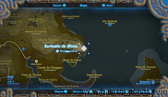
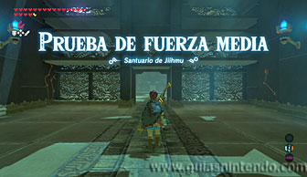
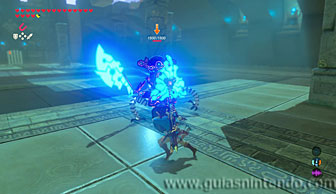
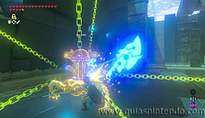
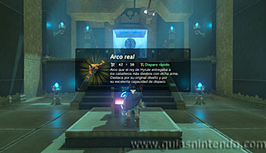

Puedes ir al santuario desde que llegas a la región de la torre de Farone. Lo encuentras situado en lo alto del Cabo Urron.

Tienes que derrotar a un miniguardián 3.0. Usa cualquier técnica para lograrlo, guardias perfectas, paralízalo, espera a que lance su rayo para atacar por el aire, etc.

Al derrotarlo podrás dirigirte hacia el altar y abrir el cofre que contiene un arco real. Al examinar el altar obtendrás el símbolo de valíacorrespondiente.
